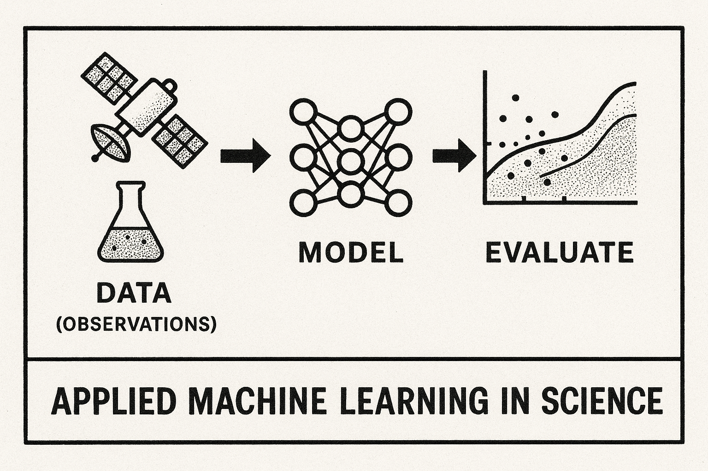
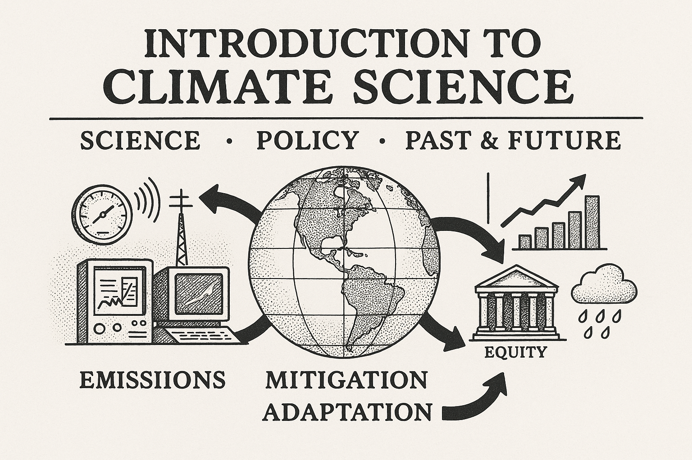
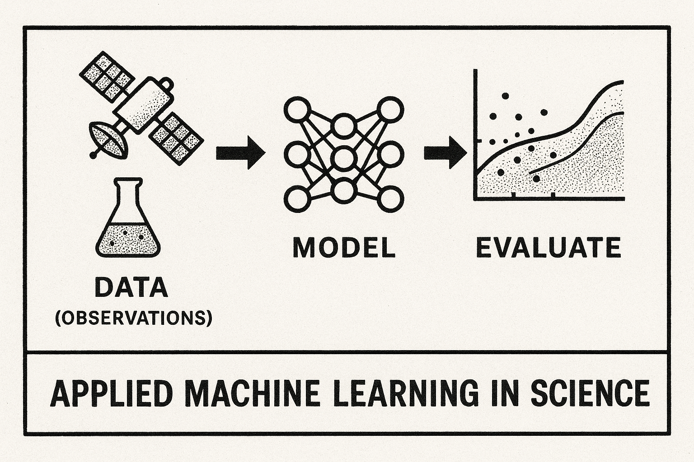
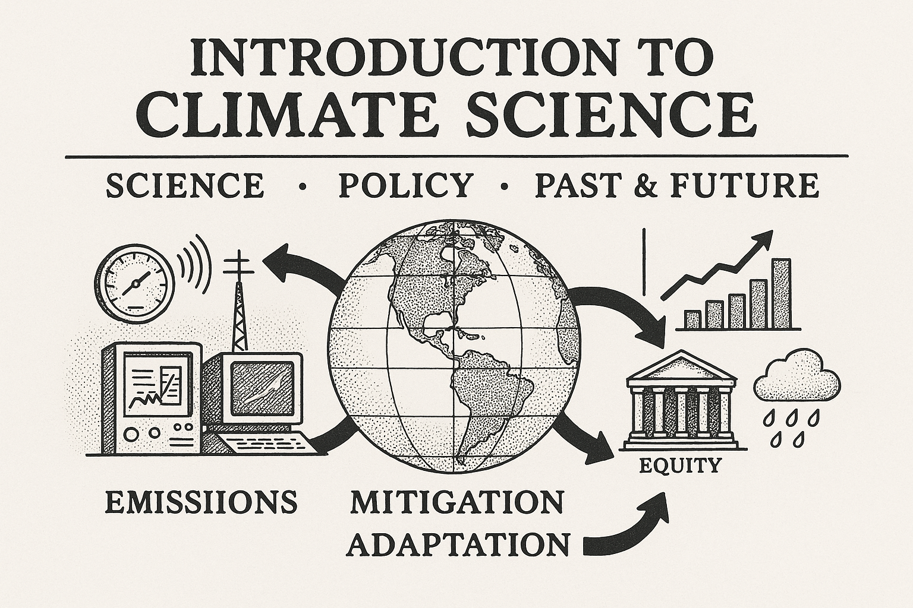

Climate + Applied AI/ML
Research
We study climate and weather with data, physical models, and AI/ML models. Here are a few of current research themes and projects.
Teaching
I have taught classes in Satellite Remote Sensing, Neural networks, and Atmospheric Chemistry and Physics. Here are a few classes that I'd love to design and teach.
- Atmospheric Physics — Thermodynamics, radiation, and cloud microphysics.
- Remote Sensing of the Atmosphere — Sensors, retrieval algorithms, and validation.
- Machine Learning Methods, and Applications - Modern ML methods and their applications.
- Introduction to Climate Science - The science, the policy relevance, and the history and future of climate studies.
 

Press
Our research has been featured in various media outlets including ,
, ,and

-
Earth Was Due for Another Year of Record Warmth. But This Warm? The New York Times
-
‘Hanging by a Thread’: U.N. Chief Warns of Missing a Key Climate Target The New York Times
-
Scientists are baffled why the oceans are warming so fast Washington Post
-
‘We’re changing the clouds.’ An unintended test of geoengineering is fueling record ocean warmth Science
-
Cleaner ship emissions may warm the planet far faster than expected New Scientist